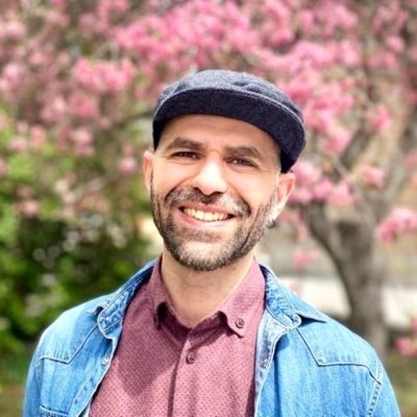

Mohannad Elhamod, Ph.D. candidate in the Department of Computer Science at Virginia Tech was recently awarded the Class of 2023 Graduate Student of the Year award in recognition of his character, service, outstanding contributions, and academic achievements. During his graduate studies, Elhamod worked on imageomics research under the guidance of his advisor Anuj Karpatne, Imageomics investigator and KGML Convergence Working Group lead. Read the full article.